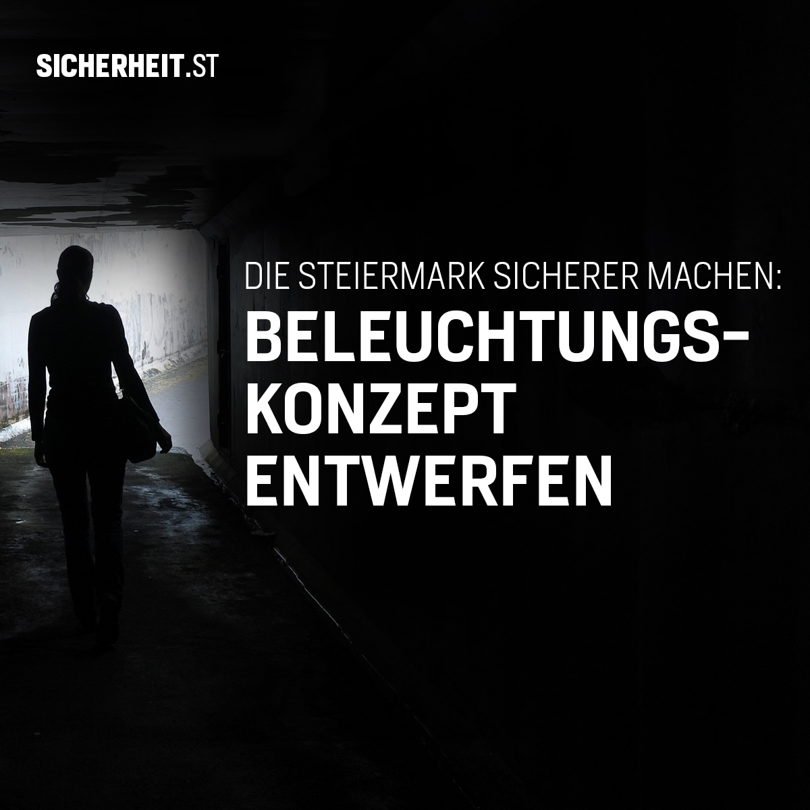
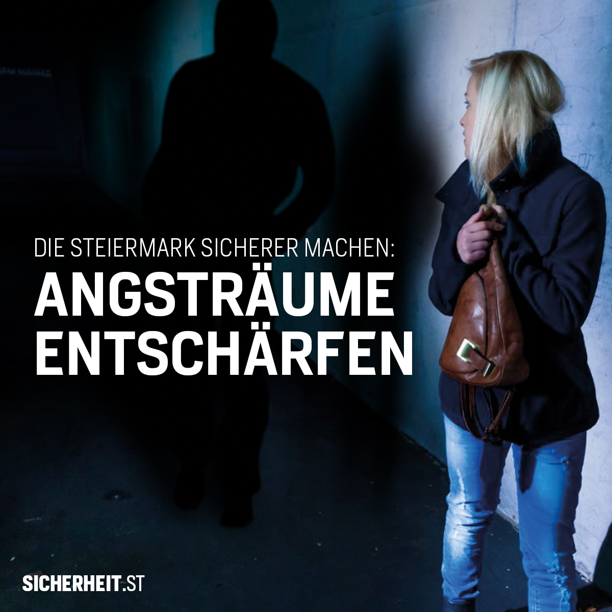
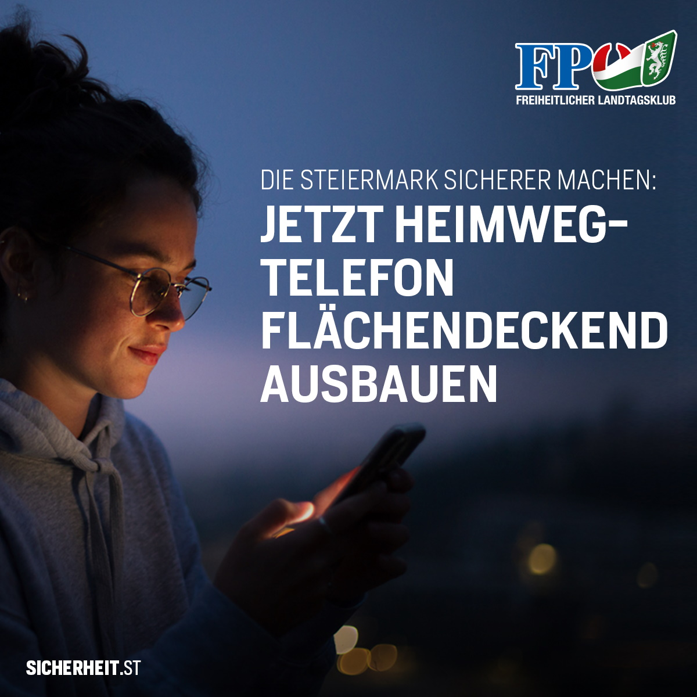

Jeder kennt diese Situation: Auf dem Nachhauseweg von der Arbeit oder beim Spaziergang mit dem Hund muss man durch diese eine Unterführung oder diesen bestimmten Park, der einem schon immer Angst eingejagt hat. Besonders in den kalten Monaten, wenn die Sonne früh untergeht, jagen uns schlecht ausgeleuchtete Plätze oder dunkle Gassen oftmals einen Schauer über den Rücken. Eine Studie zum Sicherheitsempfinden von Frauen in Graz aus dem Jahr 2017 stellte fest, dass ausnahmslos alle befragten Frauen sich eine bessere Beleuchtung, manche sogar eine Überwachung an Brennpunktstellen der Landeshauptstadt wie Parks, Unterführungen oder uneinsichtigen Stellen wünschen. Natürlich handelt es sich dabei keineswegs um ein Problem, welches nur Graz betrifft. Vielmehr kennt jeder diesen Angstraum, der sich oftmals in seinem direkten Lebensumfeld befindet.
Die FPÖ Steiermark hat es sich deshalb zum Ziel gesetzt, diesen Angsträumen den Kampf anzusagen und entschieden gegen dunkle Parks und angsteinflößende Unterführungen vorzugehen. Folgende Maßnahmen zur Erhöhung des subjektiven Sicherheitsgefühls werden von uns eingefordert:
Licht vermittelt uns Sicherheit. Das enge Gässchen, durch das wir tagsüber ohne Probleme spazieren, kann einem nachts den Angstschweiß auf die Stirn steigen lassen. Als essenzieller Schritt zur Anhebung des Sicherheitsgefühls ist deshalb eine ordentliche Ausleuchtung von öffentlichen Plätzen, Parks und Unterführungen unabdingbar. Darüber hinaus wird mit einer guten Beleuchtung jeder Platz für eventuelle Störenfriede des gesellschaftlichen Lebens uninteressant – es liegt also auch im Interesse der jeweiligen Gemeinde, für ausreichende Beleuchtungsmaßnahmen zu sorgen.
In jeder Stadt und zahleichen Gemeinden gibt es Plätze, die seit jeher als Anziehungs- oder Treffpunkt in den Nachtstunden bekannt sind. Im Zusammenspiel mit nicht ausreichenden Kontrollen kann es dort oftmals zu unangenehmen Szenen, Sachbeschädigungen oder noch viel schlimmeren Delikten kommen. Um diesen Hotspots den Kampf anzusagen, fordern wir stärkere Überwachung von sozialen Brennpunkten und Drogenhotspots. Gemeinden sollen zum Schutz ihrer Bürgern von der Möglichkeit Gebrauch machen, Alkoholverbotszonen auszusprechen und verstärkt auf persönliche, aber auch auf technische Überwachungsmöglichkeiten setzen.
Auf parlamentarischer Ebene soll die Ausweitung des in Graz durchaus erfolgreichen Heimwegtelefons auf die gesamte Steiermark vorangetrieben werden. Dieses wurde vom ehemaligen Grazer Bürgermeister-Stellvertreter Mario Eustacchio bereits 2016 ins Leben gerufen und fand inzwischen Nachfolger in ganz Österreich. So gibt es inzwischen Ableger des Heimwegtelefons in Wiener Neustadt, Amstetten, Linz, Villach und Leonding. Damit erreicht die Hotline bereits rund 700.000 Personen. Aus der ganzen Steiermark soll es möglich sein, bei Unbehagen durch die Mitarbeiter des Heimwegtelefons sicher nach Hause begleitet zu werden und die Gewissheit zu haben, dass im Notfall durch dieses Service sofort Hilfe geholt wird.
Hast du Fragen zur App oder ein anderes Anliegen betreffend Sicherheit?
Die FPÖ Steiermark hat es sich zum Ziel gesetzt Angsträumen den Kampf anzusagen und entschieden gegen dunkle Parks und angsteinflößende Unterführungen vorzugehen.
Wir nehmen jede Meldung über unsere APP, Internetseite oder per Telefon sehr ernst und bedanken uns für die Mithilfe, die Steiermark sicherer zu machen!
Solltest du Fragen haben, kannst du dich gerne an uns wenden: